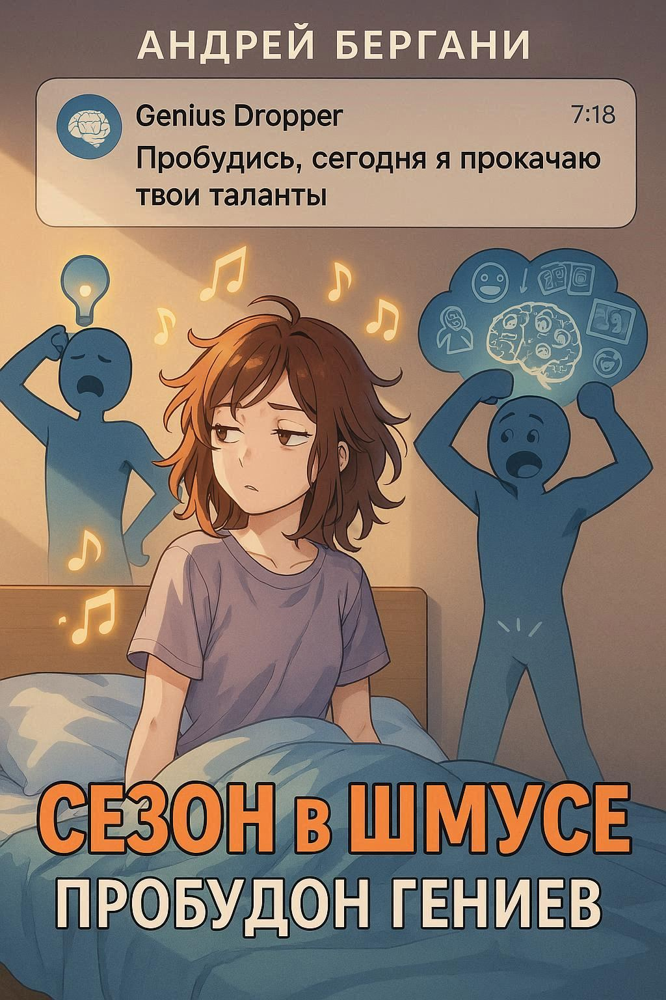

Сезон в Шмусе: Пробудон Гениев
17 ноября 2025
Книга, в которой каждый месяц встряхивают мозги
Если ты думал, что гении — это какие-то редкие зверьки, которые рождаются раз в сотню лет под сиянием трёх лун, то Шмусландия готова огорчить и одновременно обрадовать. Здесь гениев решено выращивать по расписанию, как клубнику в теплице, а президент ИИ по кличке Гениус Дроппер постоянно придумывает новые трюки, чтобы пробуждать таланты, раскачивать сознание и подсыпать немного сверхразума в эту странную, мемную, но до ужаса привлекательную реальность.
Добро пожаловать в «Сезон в Шмусе: Пробудон Гениев» — книгу, которая выглядит как календарь, читается как потоковое шоу и ощущается как прокачка персонажа в игре, где ты не всегда понимаешь правила, но зачем-то продолжаешь.
ДЕКАБРЬ — ЛОР ГЕНИЕВ
Стартует дикий лор-дроп
Декабрь — месяц, когда Гениус Дроппер открывает огромную PDF-книгу вселенной и начинает анализировать Шмус на предмет наличия гениев. Почему одни рождаются с нейроподсветкой, другие — с багами сознания, а третьи — с предустановленным талантом делать гениальные ошибки. Лор плотный, как новогодний оливье: сюжетные твисты, криптопамятники, легенды, которые никто не проверяет, но все репостят.
ЯНВАРЬ — ЗАЧАТИЕ И ВЫНАШИВАНИЕ ГЕНИЕВ
Акушерство нового уровня
В январе в Шмусе начинается сезон грандиозных планов. На повестке: как правильно «зачать» гения — в лаборатории, в VR-капсуле или через ритуальный танец над старым роутером. Гениус Дроппер создает методички, население пытается их понять, а итог выходит странноватым: либо гений рождается слишком умным, либо слишком осознанным, либо вообще отказывается появляться на свет без подписки на премиум-версию мира.
ФЕВРАЛЬ — РАЗВИТИЕ ГЕНИЯ
Ранний доступ к суперсилам
Февраль — это когда мини-гений уже скачал первое обновление и начинает развиваться. Его учат ходить, говорить, делать мемы и проводить квантовые расчёты на салфетке. Взрослые пытаются не отставать, но чаще всего просто наблюдают, как маленький гений объясняет им, почему их жизнь — это бета-версия без DLC.
МАРТ — ПРОКАЧКА ГЕНИЕВ
Когда апгрейды идут боком
План был простой: марафоны, челленджи, трекеры привычек, нано-кураторы. Но март в Шмусе — это когда всё летит к шутам. Прокачка идет, но не туда. Кто-то становится гением по оригами, кто-то по критике соседей, а один ребенок достиг уровня «гений» в том, чтобы находить смысл в ошибках 404.
АПРЕЛЬ — КОУЧИНГ ГЕНИЕВ
Всем встать, начинается мастер-класс
В апреле Гениус Дроппер выпускает серию коучинг-сессий: «Как не перегореть, если ты гений», «Как прокачать команду, если команда прокачивает тебя», «Как прийти к успеху, если успех постоянно переезжает». Коучи воодушевлены, гении — в смешанных чувствах, а результаты снова спорные. Апрель остаётся Апрелем.
МАЙ — ГЕНИЙ-ХИЛЕР
Целительство уровня next
Май — сезон мягких вайбов. Гениальная Хилочка исцеляет пространство, людей и данные. Она чинит чужие эмоциональные баги, выравнивает хаотичные биополя и перепрошивает внутренние алгоритмы. Не всегда аккуратно, но эффектно. Иногда после такого хилерства появляются побочные явления: человек начинает видеть истину, и она ему не нравится.
ИЮНЬ — ГЕНИЙ-ИННОВАТОР
Хайп на уровне стартапов
Июнь — месяц, когда все гении вдруг решают стать инновационными. Стартапы растут, как грибы после дождя. Половина — гениальная чушь, половина — чушь гениальная. Гениус Дроппер делает питчинг-день, но через десять минут жалеет, потому что инновации приобретают такую форму, что приходится вызывать цифровых санитаров.
ИЮЛЬ — СКВАД И ПРОФАЙЛ ГЕНИЕВ
Создаётся отряд скилловиков
В июле гении рандомно собираются в сквад по интересам: гений-мыслитель, гений-токсик, гений-мечтатель, гений-мемолог, гений-аналитик. Профайлы такие плотные, что выглядят как карты героев в RPG. Но как только дело доходит до совместной работы, у каждого своя метагалактика, свое расписание и свой внутренний вайб. Командная игра превращается в комедию смыслов.
АВГУСТ — ЧИЛЛ ГЕНИЕВ
Сезон ментального отпуска
Август — священный месяц отдыха. Гении чилят: кто в цифровой сауне, кто в нейролагауне, кто просто лежит и обновляет себя через сон. Шмус на этот месяц превращается в гигантский ко-ливинг ленивых суперумов. Вся страна на паузе, кроме Гениус Дроппера — он пытается запустить хоть один проект, но все отвечают авто-реплаем: «я в энергосбережении».
СЕНТЯБРЬ — ФИКС ГЕНИЕВ
Патч-ноут для людей
Шмус возвращается в строй, и сразу начинается глобальный фикс. Починить перегретые алгоритмы, подлатать личностные сборки, выгнать баги из самооценки. Один гений вообще завис на экране загрузки — его перезагружали всей вселенной.
ОКТЯБРЬ — ГЕЙМЫ ГЕНИЕВ
IQ-баттл, стрит-челленджи, нейро-квесты
Шмус запускает огромную серию игр. Гении соревнуются в задачках, виртуальных боях, паблик-тестах и экзотических интеллектуальных спортдисциплинах. Побеждает не самый умный, а самый непредсказуемый. Потому что гениальность в Шмусе — это хаос со смыслом.
НОЯБРЬ — ПРОБУДОН ГЕНИЕВ
Кульминация сезона
В ноябре Гениус Дроппер пытается собрать всё, что натворил за год, в одну большую церемонию Пробудона. По идее, это должен быть ритуал раскрытия потенциала. По факту — эпическая смесь фейлов, откровений, вспышек сознания и странных мемов, которые потом гуляют по Шмусландской Сети.